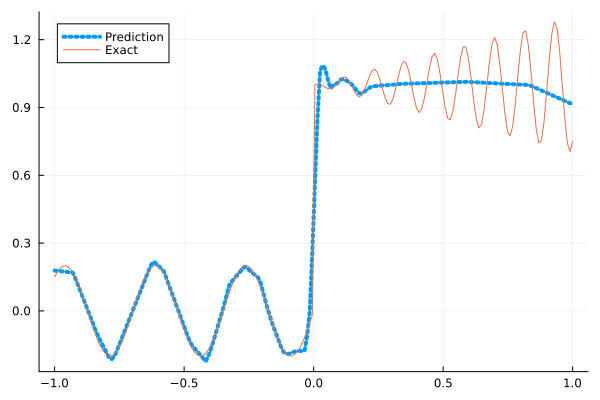
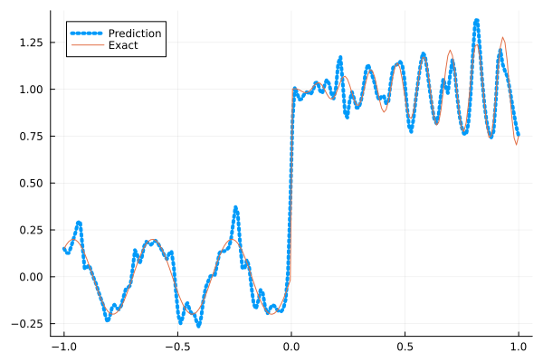
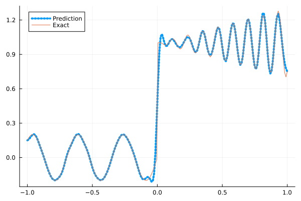
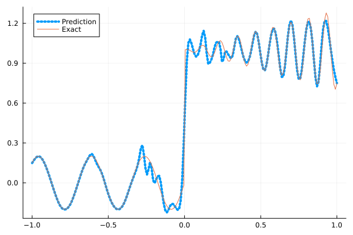
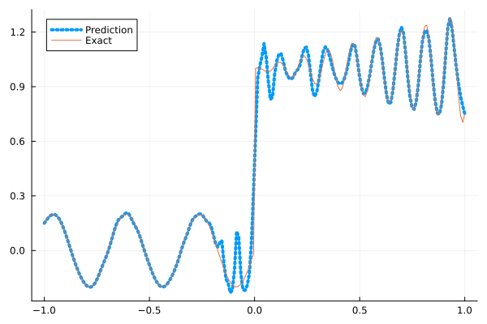

Fitting a nonlinear discontinuous function
This example is taken from here. However, we do not use adaptive activation functions. Instead, we show that using suitable non-parametric activation functions immediately performs better.
Consider the following discontinuous function with discontinuity at $x=0$:
\[u(x)= \begin{cases}0.2 \sin (18 x) & \text { if } x \leq 0 \\ 1+0.3 x \cos (54 x) & \text { otherwise }\end{cases}\]
The domain is $[-1,1]$. The number of training points used is 50.
Import pacakges
using Lux, Sophon
using NNlib, Optimisers, Plots, Random, StatsBase, ZygoteDataset
function u(x)
if x <= 0
return 0.2 * sin(18 * x)
else
return 1 + 0.3 * x * cos(54 * x)
end
end
function generate_data(n=50)
x = reshape(collect(range(-1.0f0, 1.0f0, n)), (1, n))
y = u.(x)
return (x, y)
endgenerate_data (generic function with 2 methods)Let's visualize the data.
x_train, y_train = generate_data(50)
x_test, y_test = generate_data(200)
Plots.plot(vec(x_test), vec(y_test),label=false)
Naive Neural Nets
First we demonstrate show naive fully connected neural nets could be really bad at fitting this function.
model = FullyConnected((1,50,50,50,50,1), relu)Chain(
layer_1 = Dense(1 => 50, relu), # 100 parameters
layer_2 = Dense(50 => 50, relu), # 2_550 parameters
layer_3 = Dense(50 => 50, relu), # 2_550 parameters
layer_4 = Dense(50 => 50, relu), # 2_550 parameters
layer_5 = Dense(50 => 1), # 51 parameters
) # Total: 7_801 parameters,
# plus 0 states, summarysize 80 bytes.Train the model
function train(model, x, y)
ps, st = Lux.setup(Random.default_rng(), model)
opt = Adam()
st_opt = Optimisers.setup(opt,ps)
function loss(model, ps, st, x, y)
y_pred, _ = model(x, ps, st)
mes = mean(abs2, y_pred .- y)
return mes
end
for i in 1:2000
gs = gradient(p->loss(model,p,st,x,y), ps)[1]
st_opt, ps = Optimisers.update(st_opt, ps, gs)
if i % 100 == 1 || i == 2000
println("Epoch $i || ", loss(model,ps,st,x,y))
end
end
return ps, st
endtrain (generic function with 1 method)Plot the result
@time ps, st = train(model, x_train, y_train)
y_pred = model(x_test,ps,st)[1]
Plots.plot(vec(x_test), vec(y_pred),label="Prediction",line = (:dot, 4))
Plots.plot!(vec(x_test), vec(y_test),label="Exact",legend=:topleft)Epoch 1 || 0.6155123105328226
Epoch 101 || 0.017297281587310354
Epoch 201 || 0.015819106740185506
Epoch 301 || 0.015378858319591193
Epoch 401 || 0.015020024740385505
Epoch 501 || 0.01439163161710278
Epoch 601 || 0.013531785778651582
Epoch 701 || 0.013011276063637287
Epoch 801 || 0.012657986460797492
Epoch 901 || 0.012413065745269814
Epoch 1001 || 0.01213089158086334
Epoch 1101 || 0.011828789311559965
Epoch 1201 || 0.01142783428229446
Epoch 1301 || 0.010700261034041616
Epoch 1401 || 0.00982775262453628
Epoch 1501 || 0.008802338253772867
Epoch 1601 || 0.007808760315016892
Epoch 1701 || 0.007487229875564114
Epoch 1801 || 0.0073782823251451225
Epoch 1901 || 0.007348065763715854
Epoch 2000 || 0.007314483491276367
9.365400 seconds (13.13 M allocations: 1.482 GiB, 4.87% gc time, 92.96% compilation time)
Siren
We use four hidden layers with 50 neurons in each.
model = Siren(1,50,50,50,50,1; omega = 30f0)Chain(
layer_1 = Dense(1 => 50, sin), # 100 parameters
layer_2 = Dense(50 => 50, sin), # 2_550 parameters
layer_3 = Dense(50 => 50, sin), # 2_550 parameters
layer_4 = Dense(50 => 50, sin), # 2_550 parameters
layer_5 = Dense(50 => 1), # 51 parameters
) # Total: 7_801 parameters,
# plus 0 states, summarysize 88 bytes.@time ps, st = train(model, x_train, y_train)
y_pred = model(x_test,ps,st)[1]
Plots.plot(vec(x_test), vec(y_pred),label="Prediction",line = (:dot, 4))
Plots.plot!(vec(x_test), vec(y_test),label="Exact",legend=:topleft)Epoch 1 || 1.5883531663303945
Epoch 101 || 0.0013260733120148294
Epoch 201 || 0.00011036947269497065
Epoch 301 || 5.5291877274384535e-6
Epoch 401 || 1.9497991769740884e-7
Epoch 501 || 4.397209453213959e-9
Epoch 601 || 5.896521127274396e-11
Epoch 701 || 1.494793250057053e-12
Epoch 801 || 2.618342764799308e-13
Epoch 901 || 5.3380711495274575e-14
Epoch 1001 || 5.870182584999723e-14
Epoch 1101 || 2.7789431230387533e-14
Epoch 1201 || 5.3645321292143227e-14
Epoch 1301 || 5.711969551761022e-14
Epoch 1401 || 5.542200810717538e-14
Epoch 1501 || 2.893289517852087e-14
Epoch 1601 || 3.2363033610049075e-14
Epoch 1701 || 3.589048273001038e-14
Epoch 1801 || 4.052478115247195e-14
Epoch 1901 || 4.742375850724146e-14
Epoch 2000 || 1.0584409182020353e-13
4.938362 seconds (8.15 M allocations: 1.298 GiB, 4.68% gc time, 83.96% compilation time)
As we can see the model overfits the data, and the high frequencies cannot be optimized away. We need to tunning the hyperparameter omega
model = Siren(1,50,50,50,50,1; omega = 10f0)Chain(
layer_1 = Dense(1 => 50, sin), # 100 parameters
layer_2 = Dense(50 => 50, sin), # 2_550 parameters
layer_3 = Dense(50 => 50, sin), # 2_550 parameters
layer_4 = Dense(50 => 50, sin), # 2_550 parameters
layer_5 = Dense(50 => 1), # 51 parameters
) # Total: 7_801 parameters,
# plus 0 states, summarysize 88 bytes.@time ps, st = train(model, x_train, y_train)
y_pred = model(x_test,ps,st)[1]
Plots.plot(vec(x_test), vec(y_pred),label="Prediction",line = (:dot, 4))
Plots.plot!(vec(x_test), vec(y_test),label="Exact",legend=:topleft)Epoch 1 || 0.5051762624643813
Epoch 101 || 0.005958221122775955
Epoch 201 || 0.003931812252856057
Epoch 301 || 0.002757056331147385
Epoch 401 || 0.0018439176291855678
Epoch 501 || 0.0010771044398747943
Epoch 601 || 0.0005760648916407173
Epoch 701 || 0.00025833662863249606
Epoch 801 || 0.00013021421458592883
Epoch 901 || 8.550827774257649e-5
Epoch 1001 || 6.025988845512111e-5
Epoch 1101 || 4.3329561530681164e-5
Epoch 1201 || 3.211453075084038e-5
Epoch 1301 || 2.4822716398224062e-5
Epoch 1401 || 2.008389360292138e-5
Epoch 1501 || 1.6948984785724888e-5
Epoch 1601 || 1.4801202459675602e-5
Epoch 1701 || 1.3245789835024118e-5
Epoch 1801 || 1.2056890522942376e-5
Epoch 1901 || 1.1033644654257426e-5
Epoch 2000 || 1.0126220314304898e-5
0.628992 seconds (1.15 M allocations: 892.494 MiB, 4.90% gc time)
Gaussian activation function
We can also try using a fully connected net with the gaussian activation function.
model = FullyConnected((1,50,50,50,50,1), gaussian)Chain(
layer_1 = Dense(1 => 50, gaussian), # 100 parameters
layer_2 = Dense(50 => 50, gaussian), # 2_550 parameters
layer_3 = Dense(50 => 50, gaussian), # 2_550 parameters
layer_4 = Dense(50 => 50, gaussian), # 2_550 parameters
layer_5 = Dense(50 => 1), # 51 parameters
) # Total: 7_801 parameters,
# plus 0 states, summarysize 80 bytes.@time ps, st = train(model, x_train, y_train)
y_pred = model(x_test,ps,st)[1]
Plots.plot(vec(x_test), vec(y_pred),label="Prediction",line = (:dot, 4))
Plots.plot!(vec(x_test), vec(y_test),label="Exact",legend=:topleft)Epoch 1 || 0.28156455101252936
Epoch 101 || 0.0044851861257021895
Epoch 201 || 0.003320704010790696
Epoch 301 || 0.0008677612845376906
Epoch 401 || 3.2780683370342327e-6
Epoch 501 || 0.0001009278213351441
Epoch 601 || 1.686158906386897e-8
Epoch 701 || 7.575367337448329e-11
Epoch 801 || 1.5395881675754002e-12
Epoch 901 || 1.6082368154405735e-6
Epoch 1001 || 1.1870921026475223e-7
Epoch 1101 || 5.316210267326426e-10
Epoch 1201 || 6.8079643012918595e-12
Epoch 1301 || 2.7851605288425072e-6
Epoch 1401 || 4.2447466353904003e-7
Epoch 1501 || 1.369942152861437e-9
Epoch 1601 || 1.599263535812697e-11
Epoch 1701 || 5.092209835269939e-13
Epoch 1801 || 6.333480349813959e-13
Epoch 1901 || 1.6691492308304062e-13
Epoch 2000 || 1.600313353676255e-6
4.776948 seconds (7.28 M allocations: 1.251 GiB, 4.48% gc time, 79.66% compilation time)
Quadratic activation function
quadratic is much cheaper to compute compared to the Gaussain activation function.
model = FullyConnected((1,50,50,50,50,1), quadratic)Chain(
layer_1 = Dense(1 => 50, quadratic), # 100 parameters
layer_2 = Dense(50 => 50, quadratic), # 2_550 parameters
layer_3 = Dense(50 => 50, quadratic), # 2_550 parameters
layer_4 = Dense(50 => 50, quadratic), # 2_550 parameters
layer_5 = Dense(50 => 1), # 51 parameters
) # Total: 7_801 parameters,
# plus 0 states, summarysize 80 bytes.@time ps, st = train(model, x_train, y_train)
y_pred = model(x_test,ps,st)[1]
Plots.plot(vec(x_test), vec(y_pred),label="Prediction",line = (:dot, 4))
Plots.plot!(vec(x_test), vec(y_test),label="Exact",legend=:topleft)Epoch 1 || 0.3275253123728026
Epoch 101 || 0.006106896244198079
Epoch 201 || 0.004893879782262754
Epoch 301 || 0.0042315564311123125
Epoch 401 || 0.0037631436504103875
Epoch 501 || 0.0031647035653640065
Epoch 601 || 0.0021440347516623053
Epoch 701 || 0.0007141257574186868
Epoch 801 || 0.00019790479572150574
Epoch 901 || 4.522125963169187e-5
Epoch 1001 || 1.1159935083630999e-5
Epoch 1101 || 1.1799363544211685e-5
Epoch 1201 || 6.668417013024721e-5
Epoch 1301 || 1.7236849639195969e-6
Epoch 1401 || 7.716277362571287e-6
Epoch 1501 || 9.271925235106907e-6
Epoch 1601 || 1.571243143460087e-5
Epoch 1701 || 1.8259421540349242e-6
Epoch 1801 || 7.605883719518008e-5
Epoch 1901 || 5.205127418224368e-6
Epoch 2000 || 8.497786180667174e-7
4.228266 seconds (7.03 M allocations: 1.235 GiB, 4.79% gc time, 86.32% compilation time)
Conclusion
"Neural networks suppresse high frequency components" is a misinterpretation of the spectral bias. The accurate way of putting it is that the lower frequencies in the error are optimized first in the optimization process. This can be seen in Siren's example of overfitting data, where you do not have implicit regularization. The high frequency in the network will never go away because it has fitted the data perfectly.
Mainstream attributes the phenomenon that neural networks "suppress" high frequencies to gradient descent. This is not the whole picture. Initialization also plays an important role. Siren mitigats this problem by initializing larger weights in the first layer, while activation functions such as gassian have large enough gradients and sufficiently large support of the second derivative with proper hyperparameters. Please refer to Vincent Sitzmann, Julien Martel, Alexander Bergman, David Lindell, Gordon Wetzstein (2020), Sameera Ramasinghe, Simon Lucey (2021) and Sameera Ramasinghe, Lachlan MacDonald, Simon Lucey (2022) if you want to dive deeper into this.